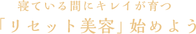
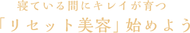

日中のあれこれがリセットされる夜に
とりたい美容ドリンク。
寝ている間に効率よくキレイを
はぐくむためには、
「美しさの循環」と「すこやかな土台」がポイントです。
配合成分にこだわって選びましょう。
美しさを循環させる成分

クワンソウ
長寿県として知られる沖縄で、おやすみ前に食されてきた伝統的なハーブ。すっきりとした深い休息をサポートし、ハリを引き出します。
金時ショウガ、ゆず
古くから、冷える季節に愛されてきたぽかぽか食材。中でも金時ショウガは、めぐりを助ける成分が豊富に含まれています。
GABA
はりつめた毎日をホッとさせてくれる健康成分。おだやかさをもたらし、ストレスの多い環境でがんばる方におすすめです。
すこやかさの土台をつくる成分
ピンッと弾むハリ感のみなもとコラーゲン、うるおいで満たすヒアルロン酸は、大人の美しさには欠かせない成分。すこやかさの土台をはぐくみ、年齢にとらわれない上向きな美しさを後押しします。


-


「飲むドモ」お客様インタビュー
ぐっすり休んで、キレイを手に入れる。あなたも始めませんか。 -


美肌を生み出す秘密とは？睡眠とお肌の関係
成長ホルモンの分泌量が減ると、お肌が乾燥しハリが失われます。 -

質の良い睡眠が美肌を生み出す！
ぐっすり眠れた朝は、肌のツヤがよく、化粧ノリが良い、そのわけは？ -

【調査】4週間の摂取で変化!?「しわ」編
眠りの質を高めることで、しわにどのような変化が？ -

【調査】4週間の摂取で変化!?「しみ」編
眠りの質を高めると、シミ・キメにも改善を示す結果が。 -

「飲むドモ」 口コミ
飲み続けている理由がわかる。実感の声を今すぐチェック！ -


ソーシャルトレンドニュース×飲むドモホルンリンクル
忙しい女性必見！短い睡眠でキレイになるには、○○ホルモンがカギ -

第2回 ソーシャルトレンドニュース×飲むドモホルンリンクル
「美味しすぎる美容ドリンク」飲むドモホルンリンクルって実際どうなの？感想まとめ -

第3回 ソーシャルトレンドニュース×飲むドモホルンリンクル
お正月のダラダラ睡眠は卒業！「グッスリ寝て女子力あげる」4つの睡眠法をやってみた